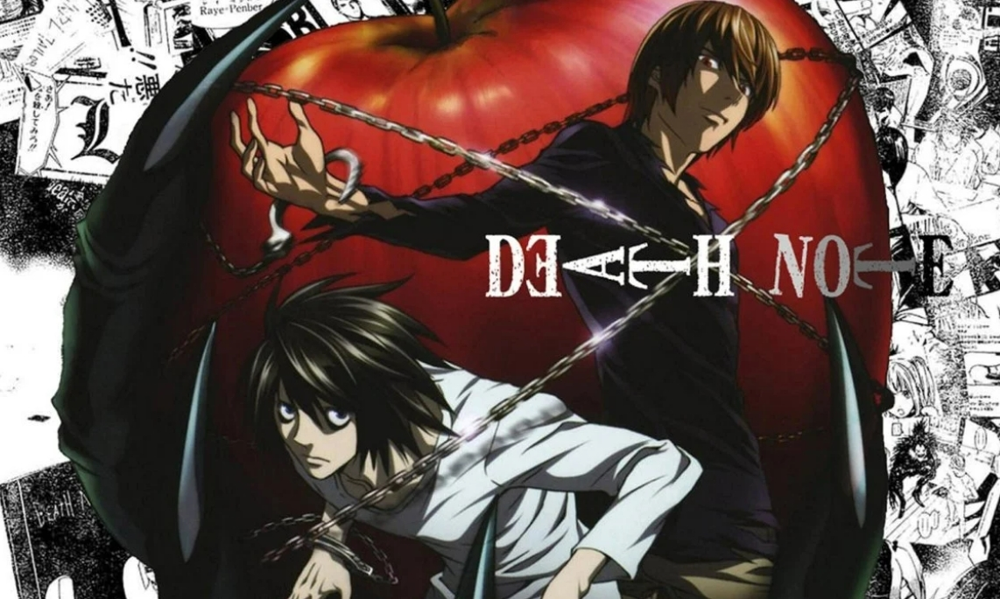

The best Psychological anime for new fans:
Psychological stories dive deep into the inner lives of characters, focusing on their thoughts, emotions, and motivations. The narrative style explores the reasons behind their actions, driving the plot and unraveling the story.
Number 1 - Death Note
Light Yagami is a genius high school student who is about to learn about life through a book of death. When a bored shinigami, a God of Death, named Ryuk drops a black notepad called a Death Note, Light receives power over life and death with the stroke of a pen. Determined to use this dark gift for the best, Light sets out to rid the world of evil… namely, the people he believes to be evil. Should anyone hold such power?
The consequences of Light's actions will set the world ablaze.
(Source: Viz Media, Anilist)
Warning: Death Note can be considered a pretty brutal show to watch, and I would advise against having younger children watch this show without supervision.
Honorable mention - The Promised Neverland (Season 1)

Before we get into what this show is about, allow me to explain why you should only watch the first season of The Promised Neverland. While the first season is considered by many to be a masterpiece, the second season is considered by many to be the polar opposite of a masterpiece. For reasons I cannot really explain, the second season takes all the good things season 1 set up, and completely crushes those. Season 2 of The Promised Neverland is a rushed mess, and instead I recommend you read the manga.
Now let's get into the story of The Promised Neverland. Emma, Norman and Ray are the brightest kids at the Grace Field House orphanage. And under the care of the woman they refer to as “Mom,” all the kids have enjoyed a comfortable life. Good food, clean clothes and the perfect environment to learn—what more could an orphan ask for? One day, though, Emma and Norman uncover the dark truth of the outside world they are forbidden from seeing.
(Source: Viz Media, Anilist)
Warning: The Promised Neverland can be considered a pretty brutal show to watch, and I would advise against having younger children watch this show without supervision.